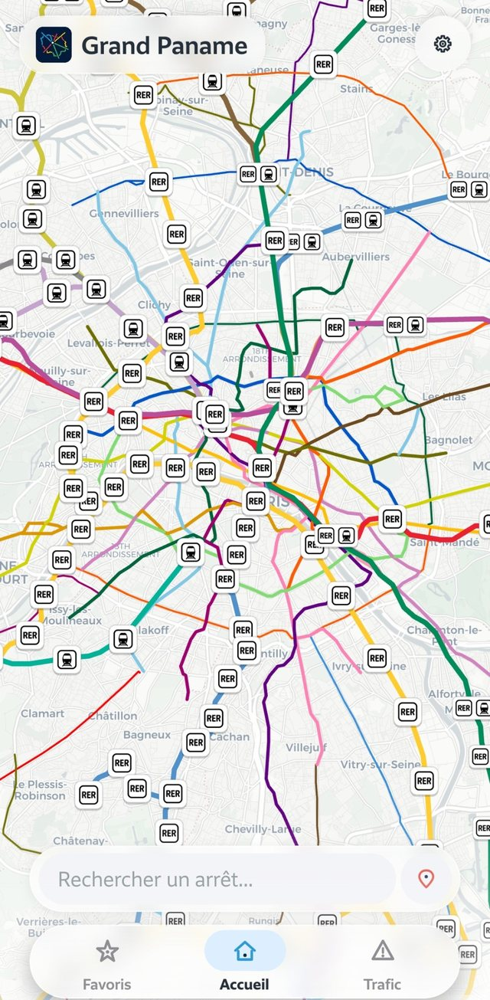
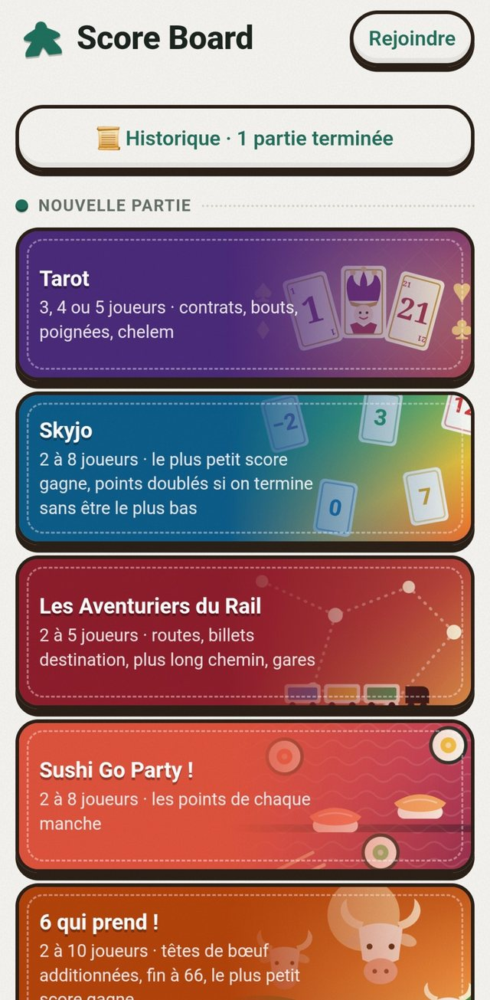
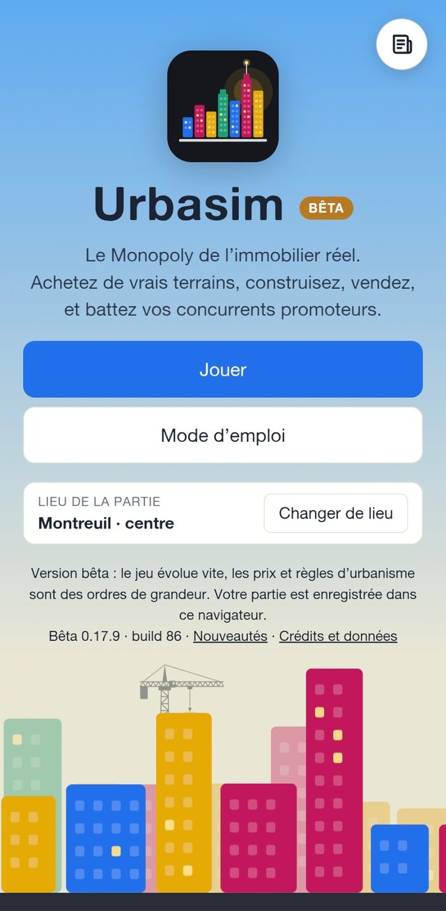

Showroom · 2026
Des apps faites
à la main, avec soin.
Six applications pour se déplacer, s'organiser, écrire, retrouver ses amis, compter les points et jouer au promoteur. Hors-ligne quand c'est possible, sans pub, sans pistage.
 L'application phare
L'application phareGrand Paname
Tout le réseau d'Île-de-France dans la poche. Une carte au centre, des horaires qui suivent ton doigt, et une app qui se sent vraiment native.
- Carte plein écran avec recherche, arrêts proches et plan du réseau
- Horaires & info trafic en direct, lignes aux couleurs officielles
- Favoris et itinéraires, avec notifications
- Trois thèmes : clair, sombre et sombre OLED

 Productivité
ProductivitéTool Proj
Le carnet de bord de tes projets d'apps : avancement, tâches, idées et équipe. Le tout sur un mur de post-it qu'on zoome du bout des doigts.
- Plan de travail de post-it : zoom, mini-carte, rangement, votes 👍
- Feuille de route & tableau : grands chantiers, tâches, bugs, idées
- Rôles admin / membre, notifications et temps réel
- Connexion sans mot de passe : lien, code ou Face ID
À faire
En cours
Fait
Desk Mail
Un client mail de bureau pour Windows. Tous tes comptes au même endroit, rien qui ne quitte ton ordinateur.
- Gmail, Outlook ou tout IMAP/SMTP, avec connexion Google / Microsoft
- Mots de passe dans le coffre de Windows (Credential Manager)
- Cache local SQLite : affichage rapide, lecture hors ligne
- Zéro serveur, zéro télémétrie : aucune donnée collectée
Re : Réunion jeudi
Thomas · à moi
Near Pass
Sache quand tes amis sont tout près. Bluetooth et Ultra-Wideband mesurent la distance et la direction, sans jamais t'envoyer vers un serveur.
- Ajout par QR code ou « à proximité », avec code à six chiffres chiffré de bout en bout
- Jeton Bluetooth qui change toutes les 10 min : sans nom, sans identifiant
- Détection en arrière-plan optionnelle, avec alerte à l'arrivée d'un ami
- Pas de compte, pas de position GPS : tout reste sur ton téléphone
 Jeux de société
Jeux de sociétéScoreBoard
Fini le papier et le crayon. Compte les points de tes soirées jeux avec un look de plateau, des confettis à la victoire et des parties partagées en direct.
- Tarot, Skyjo, Les Aventuriers du Rail, Sushi Go Party !, 6 qui prend ! et compteur libre
- Partage en direct par code à 4 caractères ou QR code
- Historique, annulation et écran de fin de partie avec suspense
- Hors-ligne : version web installable et application Android

UrbaSim
Le Monopoly de l'immobilier réel. Achète de vrais terrains, construis, vends, et bats tes concurrents promoteurs.
- De vrais terrains : tu choisis le lieu de la partie (ici, Montreuil · centre)
- Un mode d'emploi intégré et des notes de version à chaque nouveauté
- Dans ton navigateur : ta partie est enregistrée sur ton appareil
- Né d'un vrai outil de pré-faisabilité immobilière, dont il reprend le moteur de calcul

Une question, une idée ?
Une app qui te plaît, un bug, une envie de proposer un jeu : écris-moi.
contact@panamedev.fr